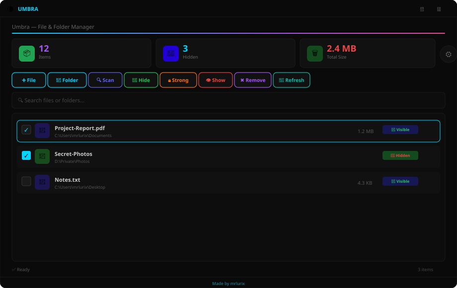

Hide files like a pro. 6 modes, Super Hide with Hidden+System, one click per file —
runs on your Windows in 2 seconds. No prerequisites.

Dark neon UI, secure by design, zero setup. All features documented.
Instant Hidden attribute toggle. Works for files & folders, even on network drives.
Hidden + System. Survives Explorer “Show hidden files” — truly invisible.
Finds already-hidden files recursively. Skips junctions, limits to 2000 items.
Live search by name/path, live counters for items/hidden/size.
Auto-saved to items.json (atomic). One-click export to Desktop.
Dark #0A0A0A, neon accents, animations, toasts, settings panel.
Recommended for Windows 10/11 x64 — ~68 MB compressed.
Download Umbra-win-x64.exepublish/win-x64/Umbra.exe
Universal — works on 32 & 64-bit, ~63 MB.
Download Umbra-win-x86.exepublish/win-x86/Umbra.exe